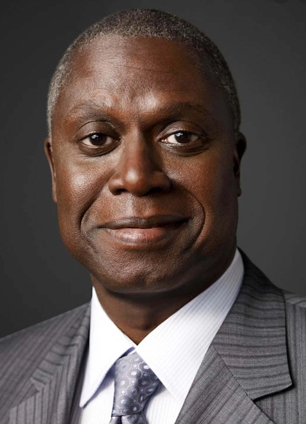

Andre Braugher

Andre Braugher (Chicago, 1 de julho de 1962) é um ator estadunidense, conhecido por interpretar os personagens Raymond Holt na série de comédia Brooklyn Nine-Nine, Thomas Searles no filme Tempo de Glória, Frank Pembleton na série criminal Homicide: Life on the Street, e Owen Thoreau Jr. em Men of a Certain Age. Também fez uma participação na série House, M.D. como Dr. Nolan.
- Nascimento 1 de julho de 1962 (59 anos) Chicago, Illinois,Estados Unidos
- Ocupação Ator
- Atividade 1989-presente
- Cônjuge Ami Brabson (1991-presente)
Emmys
- Melhor Ator em Série Dramática
- 1998 - Homicide: Life on the Street
- Melhor Ator em Minissérie ou Telefilme
- 2006 - Thief
Prémios Critics' Choice
- Melhor Ator Coadjuvante em Série de Comédia
- 2014 - Brooklyn Nine-Nine
- 2015 - Brooklyn Nine-Nine